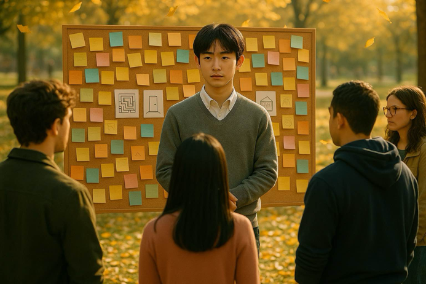

Jun responded to the comments. As the students approached one after another, the atmosphere shifted from controversy to "collective listening", and the mood gradually became more moderate.
Jun wrote an anonymous post titled "Silent People Also Want to Speak".
Jun silently tore up that painting and left the scene
Rose accepts the invitation to speak as the representative, sharing her personal experiences.